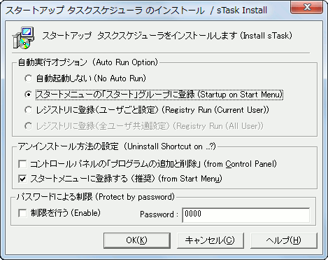

| インストール方法 |
|
| インストール方法 |
|
スタートアップ・タスクスケジューラ の全てのファイルを、適当なフォルダに入れます。（インストーラは最初に起動されたフォルダにインストールします）

 通常は、スタートメニューの「スタート」グループに登録を選択
通常は、スタートメニューの「スタート」グループに登録を選択
 自動起動しない
自動起動しない
スタートアップ時に、自動起動しません。通常、このオプションは選択しません。
 スタートメニューの「スタート」グループに登録
スタートメニューの「スタート」グループに登録
カレントユーザのスタートメニューのスタートアップ・グループにショートカットを登録します。
 レジストリに登録（ユーザ毎設定）
レジストリに登録（ユーザ毎設定）
レジストリのカレントユーザ (HKCU) の自動実行キーに登録します。
 レジストリに登録（全ユーザ共通設定）
レジストリに登録（全ユーザ共通設定）
レジストリのローカルマシン (HKLM)
の自動実行キーに登録します。（カレントユーザを含む、このマシンを使う全ユーザの起動時に自動的に実行されます。）
このオプションでを選択することで、アドミニストレータモードでのインストールとなります。
 通常は、「スタートメニューに登録する」を選択
通常は、「スタートメニューに登録する」を選択
 コントロールパネルの「プログラムの追加と削除」
コントロールパネルの「プログラムの追加と削除」
コントロールパネル（「プログラムの追加と削除」）にアンインストールのための項目を作成します。
 スタートメニューに登録する
スタートメニューに登録する
スタートメニューにアンインストーラのショートカットを作成します。
アドミニストレータ権限でのインストールが出来ない場合、自動的にこのインストールオプションしか選択できないようになります。
Windows95系の全てのユーザや、Windows NT 系のアドミニストレータは、必ずアドミニストレータとしてインストールする必要はありません。 シングルユーザとしてインストールすれば、他のユーザに影響を与えることなく、本プログラムを利用することが出来ます。
自動実行オプションを、「スタートメニュー」または「レジストリ（ユーザ毎）」に設定してください。
このマシンを利用する全ユーザの起動時に自動的に実行します。
Windows NT/2000/XP/Vista では アドミニストレータまたは レジストリの HKLM
にある Run
キーにアクセスできる権限が必要です。（プログラムが自動的に判断します）
自動実行オプションを、「レジストリ（全ユーザ共通）」に設定してください。
以前のプログラムをアンインストールしてから、本プログラムをインストールしてください。
（アドミニストレータ機能を利用して利用していた場合、アンインストール順序に注意してください。
もし、どうしてもアンインストールできなくなった場合は、Windows の
Administrator としてログオンし、「アンインストール方法」に書かれている「手動でアンインストールする方法」のレジストリを消去することにより強制アンインストールできます）
「あとがき・技術資料」に詳しく書かれています。
インストール時に、自動的にパスワードが発行されます。「環境設定」で「パスワードによる保護」を利用する場合に必要です。どこかにメモして置いてください。
なお、「環境設定」でパスワードを変更することが出来ます。
※
パスワードを忘れてしまった場合、スタートアップ・タスクスケジューラを一旦アンインストールすると、新しいパスワードが発行されます。
※ パスワードに関する質問には、作者は一切回答しません。